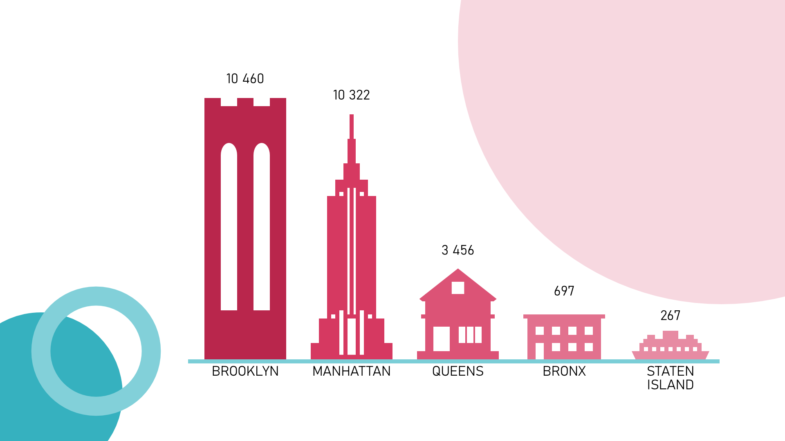
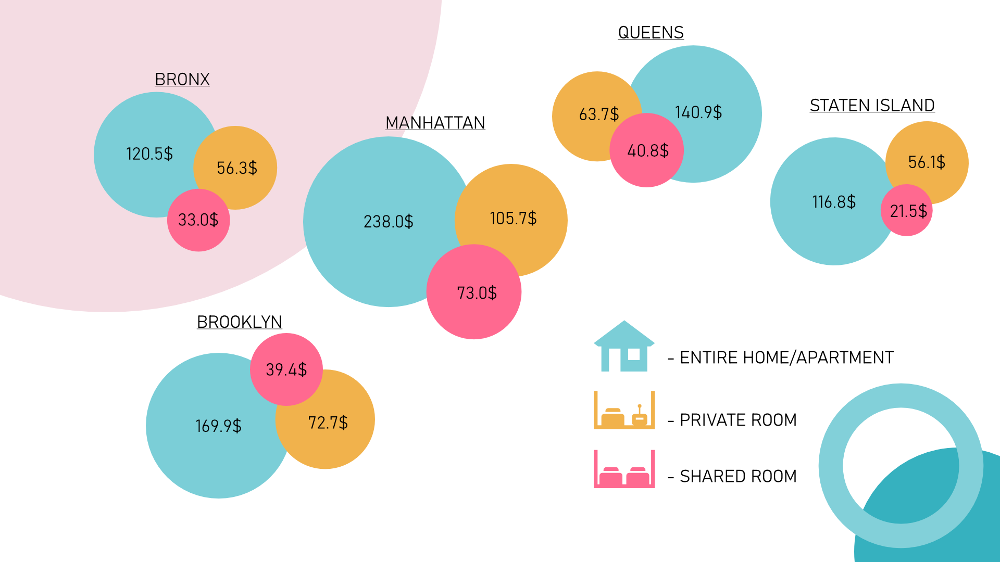
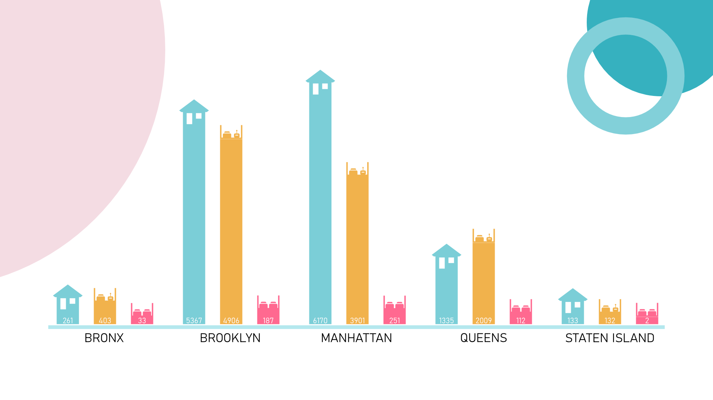
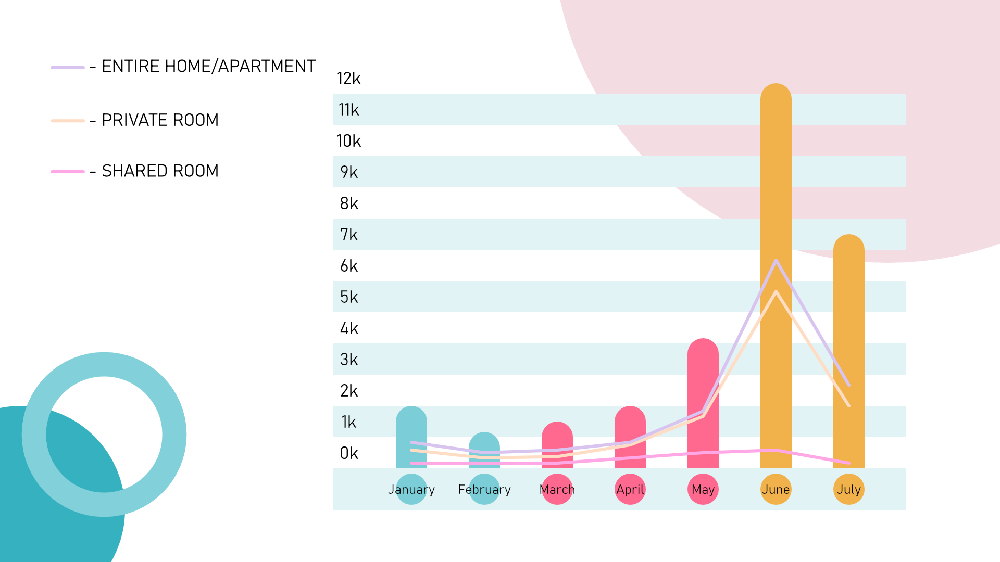

Portfolio
New York City short-term rental insights
In this presentation I conclude my findings regarding short-term rentals in New York. In presentation I explore questions as:
- What is most popular neighborhood in New York?
- What is the average rental price for short-term rentals in New York City, and how does it vary by neighborhood and property type?
- What are the most commonly rented property types on Airbnb in New York City, and how does this vary by neighborhood?
- How has demand for short-term rentals in New York City changed over time, and are there any seasonal trends that could impact business decisions?
Now I explain my findings with details question by question.
What is most popular neighborhood in New York?

My presentation gives bar graph which perfectly represent answer to the question. As you can see, most popular neighborhood in New York city is Brooklyn, then, with almost the same result goes Manhattan, Queens with notable drop in popularity have the middle place, and last places Bronx and Staten Island with 3-digit values.
To find an answer to this question I take all districts of New York from data base and count number of reviews written for rentals in the districts.
What is the average rental price for short-term rentals in New York City, and how does it vary by neighborhood and property type?

On the slide in bubbles you can see average prices for three property’s types with cyan as entire house or apartment, orange as private rooms and crimson as shared room. Average across all district was, for entire home/apartment 197.2$, for private rooms – 81.7$ and for shared room - 53.6$.
District with biggest average price was Manhattan, and the lowest prices was Staten Island.
This time I took average price for all types of rentals and sorted it by type and district.
What are the most commonly rented property types on Airbnb in New York City, and how does this vary by neighborhood?

I present to you another bar charts this time representing most commonly rented property type through districts. In all New York most commonly rented were entire houses or apartments, and least rented were shared rooms with private rooms in the middle.
But through out of districts this changes for example in Queens and Bronx private rooms were more popular with entire houses on the second place, and in Staten Island values for shared rooms and for entire houses are almost identical.
To find this answer I one more time used count of reviews to see which type of rentals had most reviews and then sorting it by district and rental type.
How has demand for short-term rentals in New York City changed over time, and are there any seasonal trends that could impact business decisions?

On this bar chart you looking how demand on rentals changes across the year, as you can see the peak of demand is in the summer, specifically in June, and the lowest demand in February, seasonal trends for room types are coming in similar path, with different number of rents, most popular is entire house and the least is shared rooms like in previous graphs.
To analyze this question, I used count of reviews once again this time sorted by month.
How do I get my results?
I start with data cleaning, I had three data bases:
Prices
I loaded prices.csv in python, then I got rid from word ‘dollar’ in prices column and make values in this column integers. After I delete outliers, all prices less then 0 and bigger than 4000. Then saved it.
import pandas as pd
price = pd.read_csv('path/prices.csv')
# get rid of dollars word and make price column in integer type
price['price'] = price['price'].str.strip('dollars')
price['price'] = price['price'].astype('int'')
# sorting, removing outliers
price = price.sort_values(by=['price'], axis=0, ascending=False)
price = price[price['price'] < 4000]
price = price[price['price'] > 0]
print(price.head())
# Save changes
price.to_csv('path/prices.csv', index=False)
Room types
Loaded room_types.xlsx, and made all data in room_type column unformal, with same letters size.
import pandas as pd
room = pd.read_excel('path/room_types.xlsx')
# Cleaning room_type str
room['room_type'] = room['room_type'].str.title()
print(room.info())
print(room.head())
# Save changes
room.to_excel('path/room_types.xlsx', index=False)
Reviews
Again, loaded document and formatted date column, with right date type.
import pandas as pd
reviews = pd.read_table('path/reviews.tsv')
# Replace data with easy to read format
reviews['last_review'] = pd.to_datetime(reviews['last_review'])
print(reviews.head())
# Save file as .csv
reviews.to_csv('path/reviews.csv', index=False)
After that I did quick analyze of data in SQL with questions and code down below:
SQL questions
What is the most common room type in NYC Airbnb listings?
SELECT room_type, COUNT(room_type)
FROM room_types
GROUP BY 1
ORDER BY 2 DESC
What is the average price of a listing by room type(shared room)?
SELECT r.room_type, COUNT(r.room_type), AVG(p.price)
FROM room_types r
JOIN prices p
ON p.listing_id = r.listing_id
GROUP BY 1
ORDER BY 2 DESC
Which borough has the highest average price per month?
SELECT borough, AVG(price_per_month)
FROM prices
GROUP BY 1
ORDER BY 2 DESC
How many listings of each room type are in each borough?
SELECT p.borough, r.room_type, COUNT(p.listing_id)
FROM prices p
JOIN room_types r
ON r.listing_id = p.listing_id
GROUP BY 1, 2
ORDER BY 2 DESC
What is the distribution of listing prices by neighborhood?
SELECT borough, MIN(price), MAX(price), AVG(price)
FROM prices
GROUP BY 1
What is the estimated amount of revenue generated by hosts in each borough?
SELECT p.borough, SUM(p.price*r.booked_days_365)
FROM prices p
JOIN reviews r
ON r.listing_id = p.listing_id
GROUP BY 1
What is the average price per month for listings in each neighborhood?
SELECT p.neighbourhood, r.room_type, AVG(p.price_per_month)
FROM prices p
JOIN room_types r
ON r.listing_id = p.listing_id
WHERE p.neighbourhood = 'Sea Gate'
GROUP BY 1, 2
How many listings have no reviews?
SELECT p.listing_id, COUNT(r.listing_id)
FROM prices p
JOIN reviews r
ON r.listing_id = p.listing_id
GROUP BY 1
HAVING COUNT(r.listing_id) = 0
ORDER BY 2 DESC
Recommendation
I think we can launch; we have a lot of data regarding room types, how they popular where and which are most popular. But nevertheless, we have gap in seasonal trends, we have information only for one year, but for more accurate predictions I recommend to analyze data of two and more years.